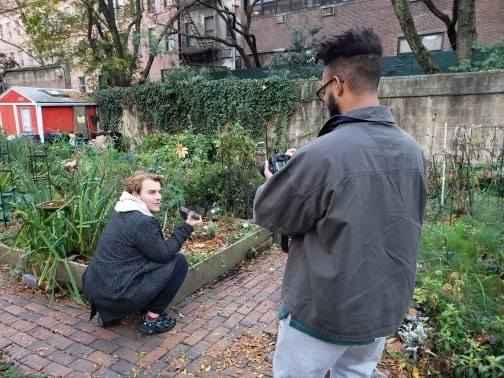

William DiPietra Award Wining Short Movie "FERIDE"
Violence is the root of oppression, a burden and stain on the soul of the victim. this stain, however, is soluble, but can only be vanquished through the most courageous act imaginable, a cry for help. Life will not forgive you for being late, but it will be merciful towards those who fearlessly and admirably seek a better life. The project was designed for a school project, associated with Fordham University at Lincoln Center, with no profit motive. The scenes were created by keeping the murders of women and the life stories of them in Turkey in last 10 years (2011-2021) in mind. We, the film crew, vehemently believe that violence can be reduced by a great measurement once the perspective of society is changed. We hope that this project will contribute to this change and offer motivation to those who are in need of help and are victims of violence. Director/Producer: Berk Civan Cameraperson: Mete Gultiken Starring: Yasemin Cem Set Manager/ Advisor: Beste Zan Music Producer: Andrew Shapiro (piano) +The music Flames of Fate by Toygar Isikli, was used without any profit motive. Context Editor: Eren Karaburun Project Instructor: Zeljka Blaksic The first screening was held in Fordham Film Festival 2021, NYC.
Documentary Film Project "My Corner at Community Garden"

Growing Healthy Children
Community Gardens teach new generation how to secure natural sources

Sustainable Communities
All people deserves healthy & organic foods and good education

Planting Fruits & Vegetables
High price tags should not decide our meal plans
Why do human beings need urban gardening as a supplement to food insecurity in order to live better lives?For our project we want to focus on food insecurity and education disenfranchisement in NYC. We seek to illuminate this by documenting the mission of the urban farm organization, Community Gardens! There is an urban farm organization based on sustainability,education, and reciprocity. On the other side, It was an enormous honor to interview Marina Hultz, an award-winning filmmaker, as well as other New York City community garden volunteers for my documentary project on urban gardening and non-traditional approaches to addressing food insecurity. Director/Producer: Berk Civan Co-Producer: Alex LaForest Guest Star: Marina Hultz Content Editor & Guest: Nicollete Makris Instructor: Hamidreza Nassiri Music Design: Giorgio Di Campo The documentary project was designed for a school project, associated with Fordham University at Lincoln Center, with no profit motive - FCLC & DTEM 2022.
